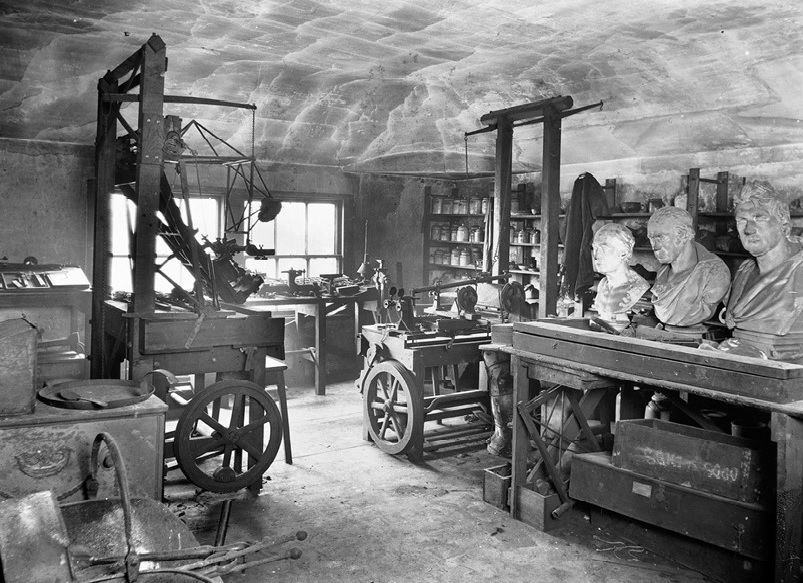

| Index | In the Making | Development and Warfare Usage | Other Examples |
| In the Making | ||
|  | After the Industrial Revolution, in the late Nineteenth Century, knowledge in all fields had grown tremendously, however it was most noticeable in sciences. For example, physics had taken off and was growing rapidly; therefore, the US and other big nations wanted to weaponize elements, such as Uranium but never put forth the funding. | |
|
| Atomic bombs were originally conceived way before World War II, however only started being made during it to be used against the Axis Powers. In 1941, when Japan attacked Pearl Harbor, that was the start of the development of atom bombs. The lead scientist during the making of the first bomb, was Robert Oppenheimer with funding by the United States and help by other scientists. |